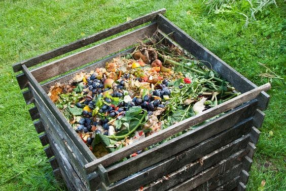

Dam, organic or natural fertilizer is formed by the decomposition of organic materials by bacteria after collecting animal waste such as cow dung and other livestock and piled it in a clean place, and any farmer can accomplish it on his farm using his capabilities of workers and a tractor cart to collect and pile the waste, spray with water weekly and turn once a month And so for a period of (9-12 months) to ensure their decomposition and the death of weed seeds, if found in them. During this period, if possible, dry leaves of plants, especially leguminous ones, can be added to raise the percentage of nitrogen. Lime (lime powder) can be added to kill insects and fungi and increase the proportion of calcium according to the rate of the heap, for example, a ton is added It has 2-3 bags weighing 10 kg, sprinkled, as well as agricultural sulfur can be added to increase the reaction at the rate of a bag per ton and spray with water with each operation. Plants or seedlings unless it is used on uncultivated land and plowed several times to ensure that it is mixed with the soil, then irrigated, then plowed again, and then planned and planted. Koura, and it is used for one-year-old seedlings, an average of half a pail of 2 kg/month (when the weather is mild) with irrigation.